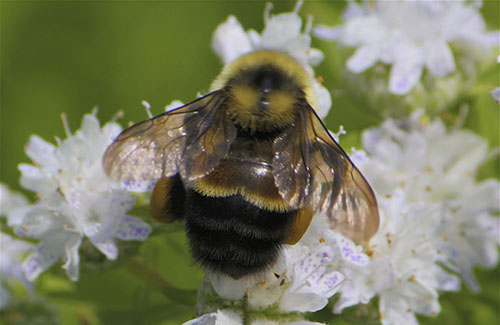
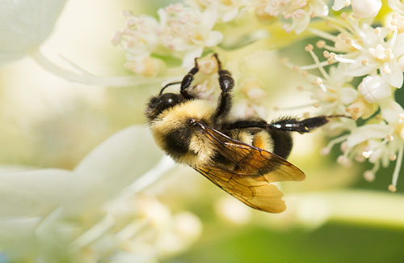

Rusty patched bumble bees live in colonies that include a single queen and female workers. The colony produces males and new queens in late summer. Queens are the largest bees in the colony, and workers are the smallest. All rusty patched bumble bees have entirely black heads, but only workers and males have a rusty reddish patch centrally located on the back.
Rusty patched bumble bees once occupied grasslands and tall grass prairies of the Upper Midwest and Northeast, but most grassland and prairies have been lost, degraded, or fragmented by conversion to other uses. Bumble bees need areas that provide nectar and pollen from flowers, nesting sites (underground and abandoned rodent cavities or clumps of grasses), and overwintering sites for hibernating queens (undisturbed soil).
Bumble bees gather pollen and nectar from a variety of flowering plants. The rusty patched emerges early in spring and is one of the last species to go into hibernation. It needs a constant supply and diversity of flowers blooming throughout the colony’s long life, April through September.
the rusty patched bumble bee was broadly distributed across the eastern United States and Upper Midwest, from Maine in the U.S. and southern Quebec and Ontario in Canada, south to the northeast corner of Georgia, reaching west to the eastern edges of North and South Dakota. Its range included 28 states, the District of Columbia and 2 provinces in Canada. Since 2000, this bumble bee has been reported from only 13 states and 1 Canadian province: Illinois, Indiana, Iowa, Maine, Maryland, Massachusetts, Minnesota, North Carolina, Ohio, Pennsylvania, Tennessee, Virginia, Wisconsin – and Ontario, Canada.

Most of prairies and grasslands of the Upper Midwest and Northeast have been converted to monoculture farms or developed areas, such as cities and roads. Grasslands that remain tend to be small and isolated.
Other factors that are killing these bees off are intensive farming, diseases, pesticides, and global climate change.
Several Service programs work to assess, protect, and restore pollinators and their habitats. Also, the Service works with partners to recover endangered and threatened pollinators and pollinator-dependent plants. Concern about pollinator declines prompted formation of the North American Pollinator Protection Campaign, a collaboration of people dedicated to pollinator conservation and education. The Service has a Memorandum of Understanding with the Pollinator Partnership to work together on those goals.